Atari Punk Console
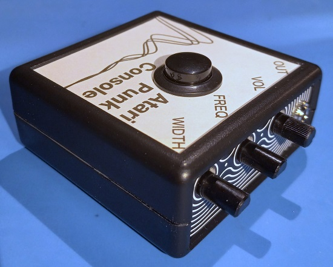Background
The Atari Punk Console is a well known circuit developed in the early 70's by Forest M. Mims who called it (more usefully) a Stepped Tone Generator. Because of its low component count and retro sound, it is often one of the first circuits built by people interested in audio synthesis.
Its name references the fact that it sounds like the old Atari game console. I'm not sure where the "punk" comes from. I had thought it was a term that referred to hacking (not necessarily software related, "to punk a system"), but couldn't find any reference to that usage online. I was probably thinking of phreaking.
A lot has been written elsewhere on the internet about its history and how it works. The best reference I found was from Notes and Volts, which contains a thorough explanation about how it works and a video that shows how the waveforms change when the potentiometers are adjusted.
Here's some other references:
Wikipedia
Collin's Lab: Atari Punk Console (Youtube)
Atari Atari Atari Punk Punk Punk Console (Youtube)
Adafruit kit (discontinued)
Jameco Electronics kit
Rakits kit
I had been wanting to try making my own version of an APC for several years. The motivation to finally do it came when I was looking for something to make 20 of for Christmas.
Breadboard
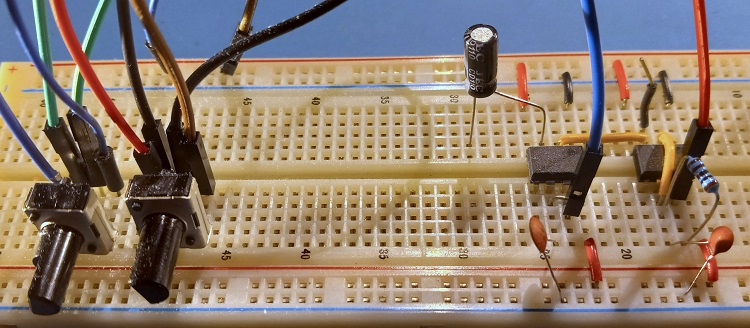The first step was to actually build one myself so I found a schematic on Wikipedia and assembled it on a breadboard with parts I had on hand. The above picture was taken after the project was done and I'd partially disassembled it so the volume pot, button, and speaker output are missing.
It worked right away and the frequency range sounded good so I didn't adjust any of the part values.
Schematic
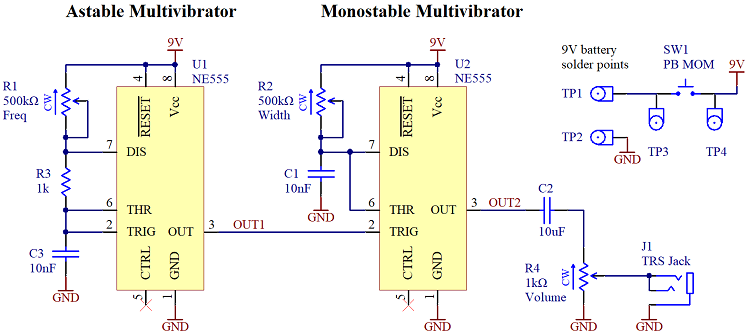The next step was to import the circuit on the breadboard into an Altium schematic. Since there wasn't much actual circuit design this was mostly just making the library symbols and connecting them correctly, making sure to draw it in a way that's easy to understand.
I didn't include 100nF caps next to the 555 timer pins. This is usually done to reduce noise from an IC's sudden current draws, but the breadboard version sounded fine without them and it would have been two more components to solder. I did buy some and worst case could have bodged them in since the power and ground pins were next to each other. In retrospect I should have included the footprint and then just not populated them.
How to manage power was a big consideration. I initially wanted to include both a dedicated power switch and a button that would connect the audio signal to the output but I was having trouble fitting all the UI elements into the enclosure. The faceplate had room for three pots and a jack (all required), and I could only fit one UI element on the top of the box while still having room for the battery and PCB. I couldn't find anywhere for the power switch. I considered just leaving the oscillator always running, but the requirement I set for that option was that it had to run for three years on a 9V cell and it didn't even come close.
Then I realised the button that I had right before the audio output could be a power button instead. In other words, between each note the whole circuit shuts off and starts up again when the button is pressed again. I was initially hesitant because I was worried there would be some startup audio distortion whenever the power was turned on but testing on the breadboard showed that it sounded fine.
In the end I was able to get rid of the power switch entirely by moving the button connection, which reduced BOM cost and assembly time.PCB
This is where most of the design effort was spent. I wanted to make this a polished product that was as close to a consumer product as I could get without spending too much. That meant putting it in an off the shelf enclosure.
I had used the Hammond 1593KBK enclosure in a previous project and it seemed suited to this one as well. The parts of the enclosure were well made with good fit/finish and without mold flashing.
The next step was deciding where all the UI components would be placed (see discussion above). I was kind of restrained by the enclosure, since the PCB had to mount to the enclosure bottom and the button had to be on the enclosure top.
After that was decided I wrapped the PCB into the remaining space, leaving room for the 9V battery, then put the components where they fit. There weren't any high speed signals, so controlled impedance traces weren't needed and parts could be put mostly wherever. Solder points for the button and battery were put in places I thought would be easy to solder, but they ended up a bit close together.
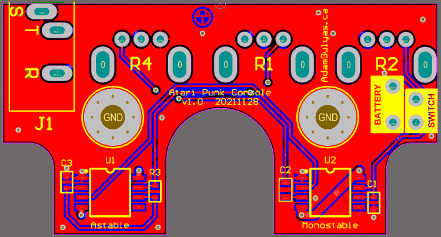 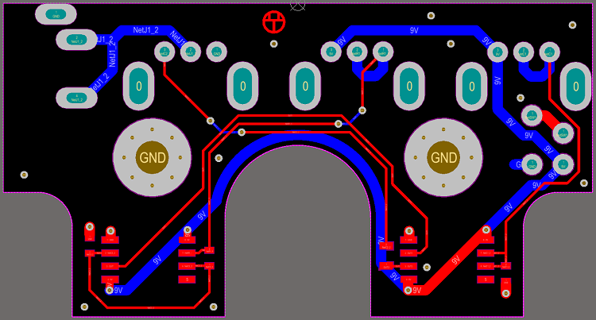 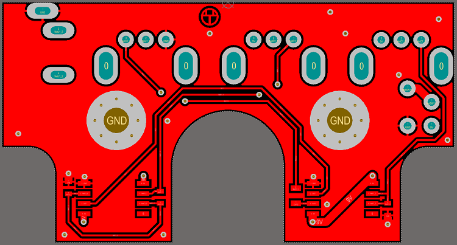 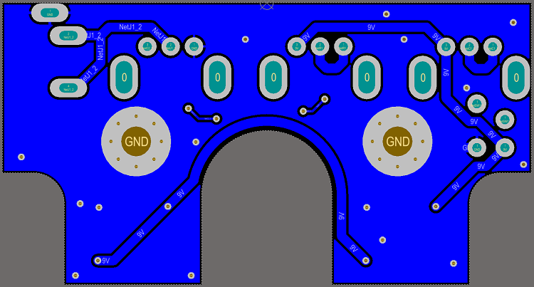 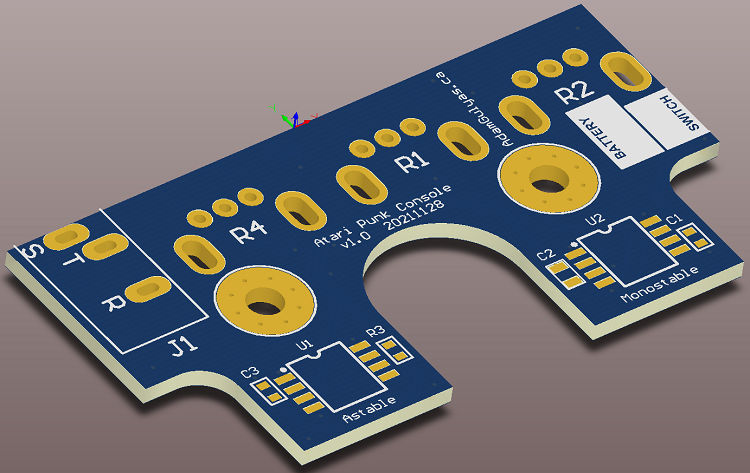 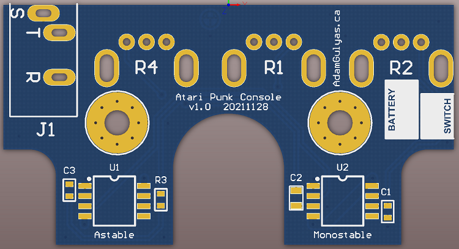 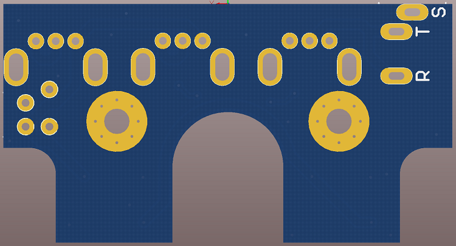 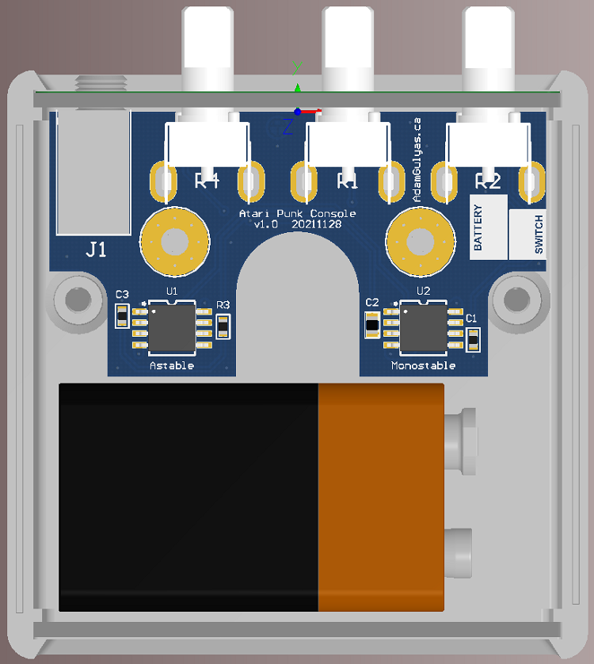 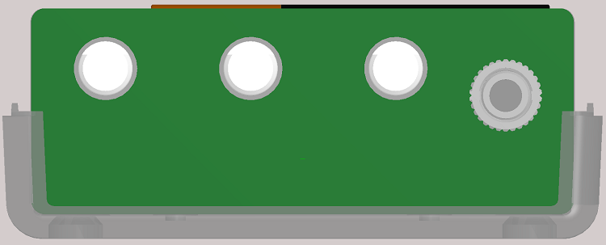 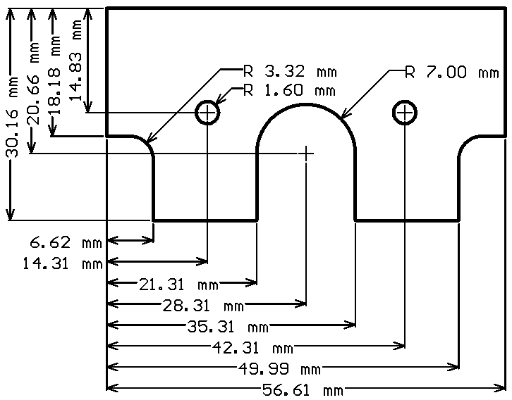 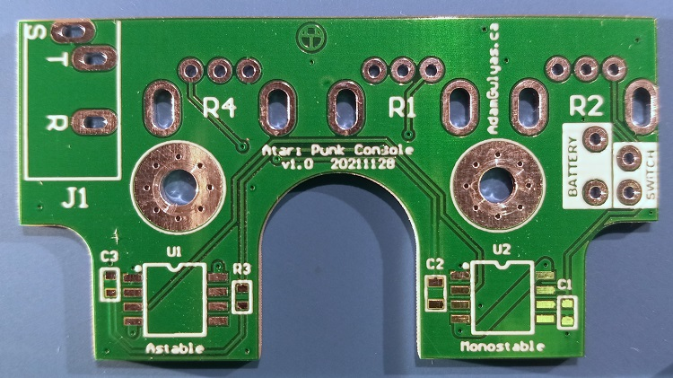 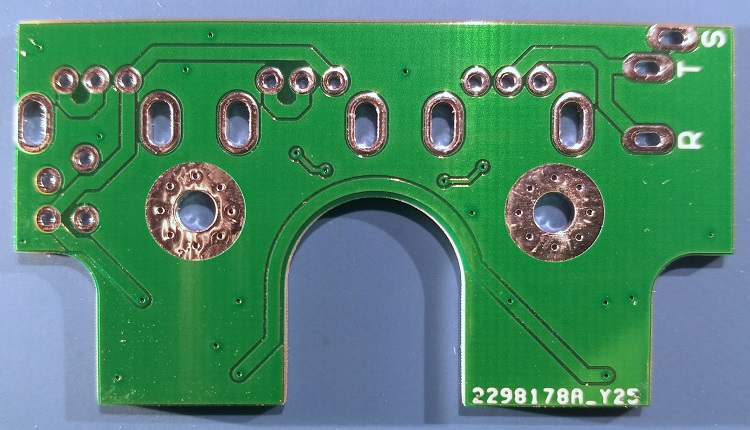PCBA BOM
| Part | Manufacturer | Part Number | Digi-Key Part Number | Quantity | Price/unit (CAD) |
|---|---|---|---|---|---|
| RES SMD 1K OHM 1% 1/10W 0603 | Yageo | RC0603FR-071KL | 311-1.00KHRCT-ND | 1 | $0.04 |
| POT 1K OHM 1/20W CARBON LINEAR | Bourns Inc. | PTV09A-2020U-B102 | PTV09A-2020U-B102-ND | 1 | $0.89 |
| POT 500K OHM 1/20W CARBON LINEAR | Bourns Inc. | PTV09A-2020F-B504 | PTV09A-2020F-B504-ND | 2 | $0.86 |
| CAP CER 10000PF 25V X7R 0603 | Yageo | CC0603KRX7R8BB103 | 311-1360-1-ND | 2 | $0.03 |
| CAP CER 10UF 16V X5R 0805 | Samsung | CL21A106KOQNNWE | 1276-2894-1-ND | 1 | $0.11 |
| CONN JACK STEREO 3.5MM R/A | Switchcraft | 35RAPC2BV4 | SC1460-ND | 1 | $2.53 |
| IC OSC SGL TIMER 100KHZ 8-SOIC | Texas Instruments | NE555PSRE4 | NE555PSRE4-ND | 2 | $0.51 |
| BATT CONN SNAP 9V 1 CEL 6" LEADS | Keystone Electronics | 233 | 36-233-ND | 1 | $0.63 |
| Main Board PCB | JLCPCB | - | - | 1 | $0.49 |
The total cost for the PCBA was $6.89 CAD when parts for 20 boards were ordered. The price would come down a bit if I ordered enough for 50 or 100 units.
PCB Assembly
Done with a soldering iron.
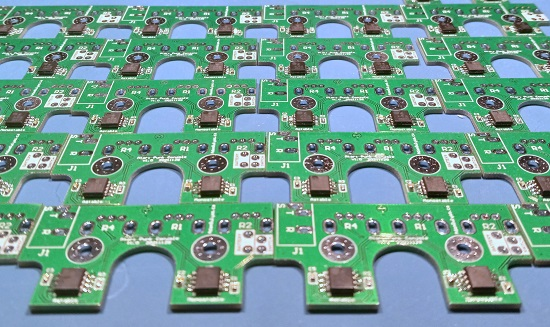Faceplate
Instead of drilling holes in the faceplates that came with the enclosure, I designed a PCB that was the same size with holes in the right position. The line art was vaguely inspired by sound waves and what it would look like if you dropped three stones in a pond at the same time.
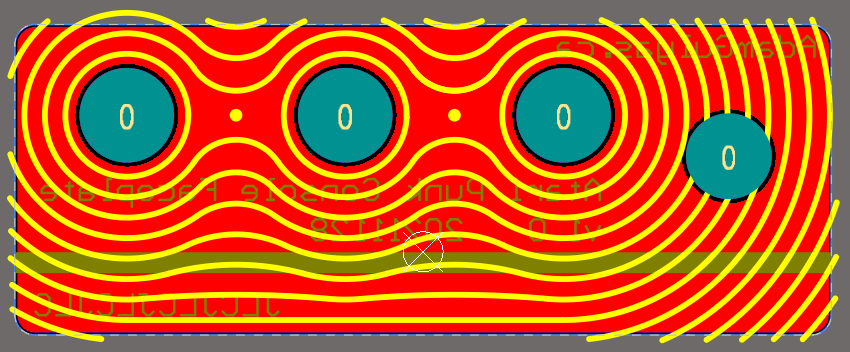 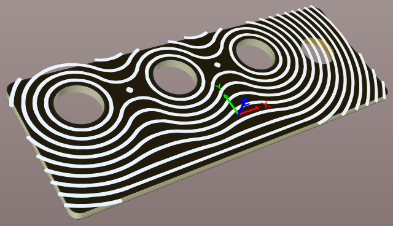The line across the back of the PCB (green rectangle) lined up with the main PCB, which made calculating the hole height easier. The height was also confirmed by referring to the 3D model assembly.
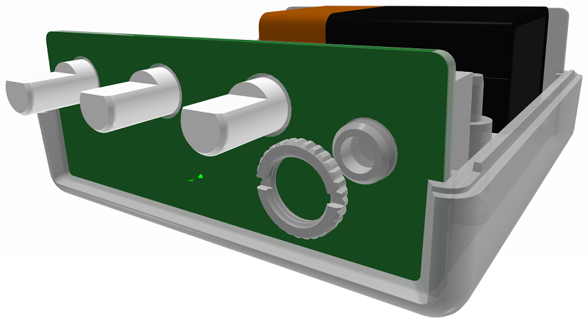Enclosure Modifications
I was kind of disappointed with the quality of the enclosures. I had ordered this part before for a different project and they were clean and fit together well. This time there was injection mold flashing left behind which I had to trim. Worse yet, the enclosure came with two faceplate options and the one I wanted to use had weird gaps and wasn't flush. I had to use the other one that didn't look as nice.
I had to drill the hole in the lid for the button. In order to make sure the button lined up with the PCB I made a template that let me center punch the lid accurately. Then since the hole was a bit large for a twist drill bit I used a stepped bit. I also drilled out two of the standoffs to make room for the battery.
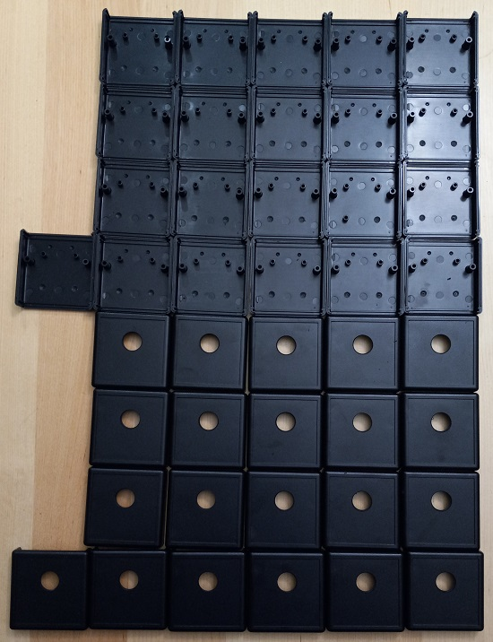Battery Retention
Figuring out how to mount a battery in the enclosure was challenging. Ideally the enclosure would have a built in battery compartment. Those are pretty expensive though, so after a bit of thinking the final solution was to use some compressible foam with adhesive on one side attached to the enclosure top, which would keep the battery pressed against the bottom of the enclosure. I ended up using weather stripping since it comes in multiple thicknesses and was readily available.
Even though there was no adhesive on the surface touching the battery, the weather stripping gripped it. This unexpected benefit meant that I didn't have to add extra foam to stop it rattling around.
Sticker

In the past I've used Avery full page sticker project paper, but the end result was a bit blurry and the blacks weren't deep.
This time I ordered some glossy sticker paper and the result looked pretty good. Unfortunately the sticker itself was pretty thin. Usually this wouldn't be a problem, but when I put the sticker on the enclosure and tightened the button, the button would spin a bit. This spinning caused the sticker to warp, which looked pretty bad. I couldn't stop the button from spinning and didn't want to leave a large enough hole in the sticker to avoid the button completely. I couldn't see any way to make the glossy stickers work, so I went back to the paper ones.
The UI labels were slanted so the button lip didn't cover FREQ and the name of the device was wrapped around the button. After that, there was a bunch of white space remaining, so I tried a few graphic details before choosing one I liked. Here are some of the alternatives I tried.
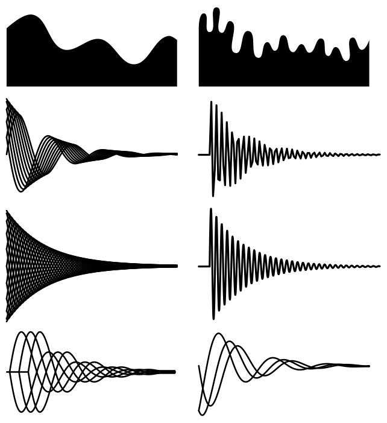All the damped sinusoids were rendered in Inkscape using their equations. They were generally of the form:
$$y=e^{-ax}\sin(\pi(x+b))$$where a controls how fast the curve shrunk and b controls the phase of the sinusoid.
Device Assembly
Device assembly went pretty well with two main issues. The first one was that I forgot to add polarity markings on the PCB for the battery connection, so I had to refer to the source files.
The second issue was that, once everything was all together, some of the knobs wouldn't turn. They were rubbing on the side of the faceplate holes. it only happened when the enclosure screws were very tight, so I slightly loosened the screws on the ones that were rubbing and the knobs were able to turn easily again.
I'm still not sure exactly what was causing the rubbing, but it could have been a few things. The dimensions of the physical part could have been different from the drawing and 3D model. It could also be caused by only using two mounting bosses for the PCB, which creates an axis that the PCB rotated around, moving the knobs out of position. I could also have just made a mistake with the calculations or aligning the 3D models.
In any case, finding the root cause is a moot point since I don't plan on making another run of these and I found a workable solution. If I have time in the future I think I'll use a laser cutter to make a prototype faceplate first.
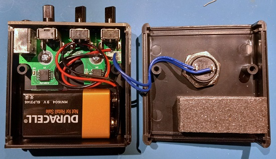 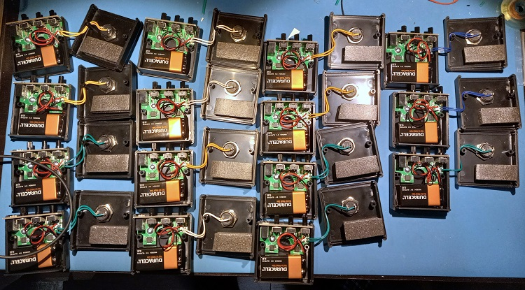Box
I wasn't willing to have custom boxes made, so finding a box that was the right size involved a lot of searching online, shifting through the default box sizes and types available. Ideally it would have been a snug fit but I could only find something that was slightly larger. Since I didn't want the device to rattle around and didn't want to use packing peanuts or tissue paper, I designed a box insert.
Box Insert
Influenced by the packaging cellphones come in, I though a box insert would make the whole thing seem cleaner and more intentional as opposed to using some sort of padding.
Based on the size of the box, the insert would have to provide padding both horizontally and vertically (when looking down into the box). I decided to center the device horizontally, but move it all the way down vertically. Adding the extra space at the top would provide more padding for the knobs and make it easier for a finger to get between the lip of the device and the box wall to pull it out. Not adding a bottom wall also reduced the complexity and assembly time of the insert, which is great for something you're making 20 of.
I also wanted the insert to lift the device up, away from the bottom of the box. Although I got lucky with the default box sizes that were available and ended up lifting it only 5 mm, I still wanted to include this feature so I'd know how to make it work in future projects if I had to. It would look pretty bad if the device was at the bottom of a box 2-3 times its height, swallowing it up. It makes it look like the packaging is guarding the device from the user instead of offering it up to the user.
I thought about adding circular cutouts on the side walls so the user could use a thumb and finger to hold the sides of the device and pull it out, but it was another manufacturing step and I didn't have a way to make precise hole cutouts that were clean enough for the user to see. In the final design almost all the edges the user sees are folded, making it look clean and precise, and I didn't want to disrupt that.
Making the insert would have been an ideal application for vacuum forming, but I didn't have access to a vacuum former or a way of making the mold. I decided to try folded cardstock instead since that was what a lot of phone packaging uses and all I needed was a printer and scissors.
Without much experience in designing paper objects, I sat down with QCAD (a 2D drafting program) and tried to make something that could be cut out and folded into a form that would provide support in the right places. I ended up making 4 prototypes. Throughout the process, as I found flaws in the first three designs, there were a lot of moments of "Oh, of course it would do that."
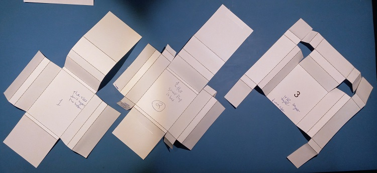The first one was pretty naive. The side walls didn't support the floor of the insert, slumping down until it touched the floor of the box. Also, I didn't account for the width of the top wall when drawing the floor of the insert, so the base of the top wall was squished to zero width.
For the second prototype, I accepted that I would probably have to use tape, an additional production step I was hoping to avoid. I added some tabs that would fold under the left and right walls of the insert and tape into place, providing support to keep the walls folded at right angles instead of slumping down. To provide space for the top wall, after some debate I inset the top wall past the left and right sides instead of the other way around since continuing the vertical lines looked cleaner.
After making the second prototype, I saw that the support feature I had added to separate the floor of the insert from the floor of the box along the top wall was bending open and looked bad, despite taping it closed at the edges. Also, the tabs weren't long enough to have enough leverage to maintain the wall bend angles.
For the third prototype, I realized I could extend the support tabs all the way to the floor of the box by moving them from the inner side to the outer side of each wall. This would keep the top inner corners of the walls a set distance from the floor of the box. which was a more direct form of support than trying to keep the wall bend angles constant. I also made the tabs longer, extending the support all the way along the wall.
Additionally, support tabs were added to the top wall which allowed the removal of the support feature that was bending open.
Given all the extra support I was adding, I removed the flaps from the top wall and the bottom of the floor of the insert that would fold under the insert. I thought the support from the left and right walls would be enough to keep the bottom edge of the insert's floor away from the box's floor.
After making the third prototype, I saw that the bottom edge of the insert floor was bending towards the box floor, but that was pretty much the only issue. I also realized that, since I was already printing lines on the cardstock, I could also include the version number.
The fourth prototype added back the bottom tab. It didn't have any issues when I built it, so that's what I went into production with. I added some basic information then got down to cutting.
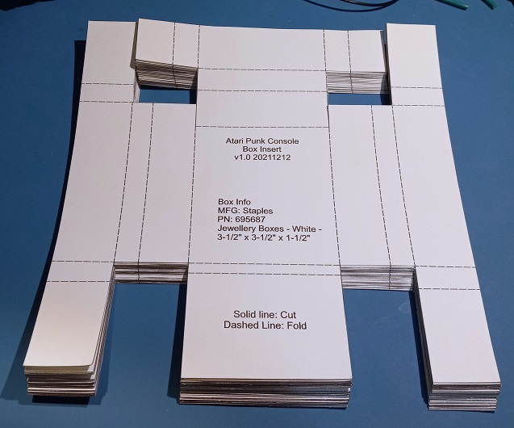After that it was just folding, taping, then putting the inserts into the boxes.
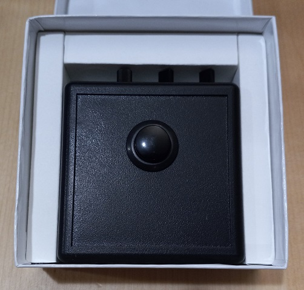Stamp
I wanted some way to add my symbol to the packaging that was faster and more precise than a stencil so I ordered a stamp from Dominion Rubber Stamps & Engraving. It was surprisingly cheap and easy.
Unfortunately the gloss finish on the boxes didn't absorb the ink like regular paper or cardboard would, so I had to stamp them then let them dry for a week before they were smudge resistant. I thought about putting it in the middle of the floor of the box insert, but I had already made the inserts by this point and it would have damaged them.
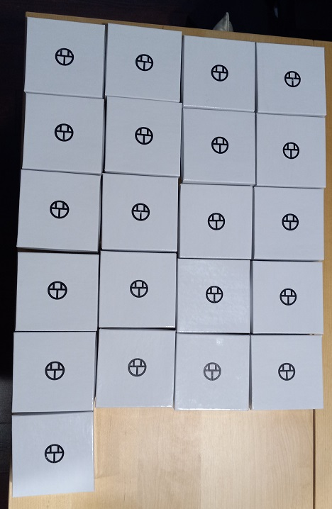Information Insert
One of these was included in each box. I wanted to explain how the device worked to people with no electronics knowledge, but when I showed it to some people they usually had questions and needed more information. I think I missed the mark and should have added more detail, but it was pretty space constrained. I didn't want to deal with the alignment issues that come with double sided printing on a cheap inkjet and I didn't want it to look overly busy and chaotic. 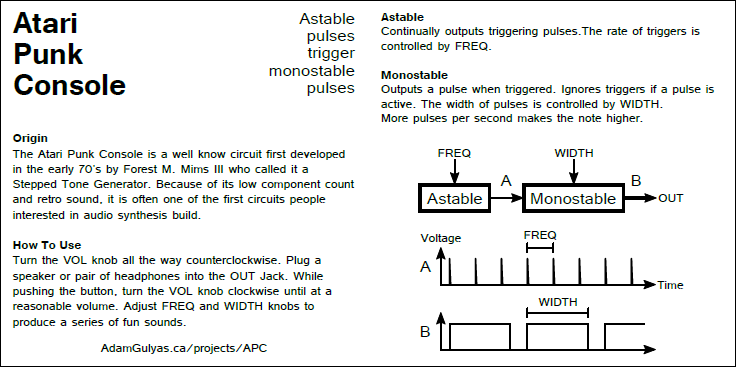 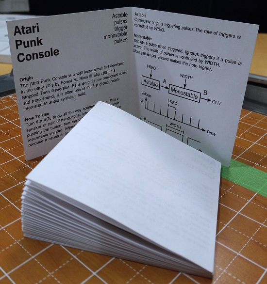
Bulk Packaging
With all the packaging pieces finished, all that was left to do was put everything together.
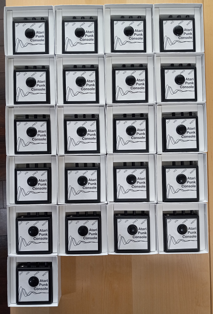Cost Analysis
Device BOM| Part | MFG | MFG PN | Vendor | Vendor PN | Quantity | Price/unit (CAD) |
|---|---|---|---|---|---|---|
| PCBA | - | - | - | - | 1 | $6.89 |
| Face Plate PCB | JLCPCB | - | - | - | 1 | $0.61 |
| SWITCH PUSH SPST-NO 6A 125V | CW Industries | GPB507A05BB | Mouser | 629-GPB507A05BB | 1 | $4.60 |
| BATT ALKALINE 9V | Duracell | MN1604 | Mouser | 613-MN1604 | 1 | $2.25 |
| BOX ABS BLACK 2.647"L X 2.607"W | Hammond Manufacturing | 1593KBK | Mouser | 546-1593KBK | 1 | $4.26 |
| SCREW FOR MNT PC BOARD | Hammond Manufacturing | 1593ATS50 | Mouser | 546-1593ATS50 | 2 | $0.18 |
| Rubber Foam (Battery Retention) | Frost King | Black R734C | Canadian Tire | #064-0951-4 | 1 | $0.32 |
| Sticker Project Paper 1/12 sheet | Avery | 0.3383 | Staples | 522226 | 1 | $0.09 |
The total cost for the device was $19.38 CAD.
Packaging BOM| Part | MFG | MFG PN | Staples PN | Quantity | Price/unit (CAD) |
|---|---|---|---|---|---|
| Jewellery Boxes - White - 3-1/2" x 3-1/2" x 1-1/2" | Staples | 695687 | 695687 | 1 | $0.56 |
| Box Insert Card Stock | Staples | 733350 | 733350 | 1 | 0.09 |
| Information Insert Paper | Staples | 380480 | 380480 | 1 | 0.01 |
The total cost for the packaging was $0.66 CAD.
In total, the cost for one unit (device + packaging) was $20.04. According to Dave from EEVblog, that means I should charge $50/unit. The 2.5 multiplier pays for the time it takes to make the devices and all the incidental costs.
Ramping Up Production
If I was going to start mass production, there are a few things I could do to decrease time and cost:
- Pay for someone to print the sticker and information insert for me. Not having to print and cutout everything would save a large amount of time. I could also double side the information insert and get a higher quality material for the sticker.
- Buy a custom made box that's the right size so I could skip the box insert. Or if I keep the box insert for aesthetic reasons, it could be die cut for quick assembly and include graphics.
- Getting the enclosure machined would save time.
- Panelizing the PCBs and having them populated at the factory would save a lot of time. I'd still probably want to populate the through hole parts myself to save money, depending on the quote.